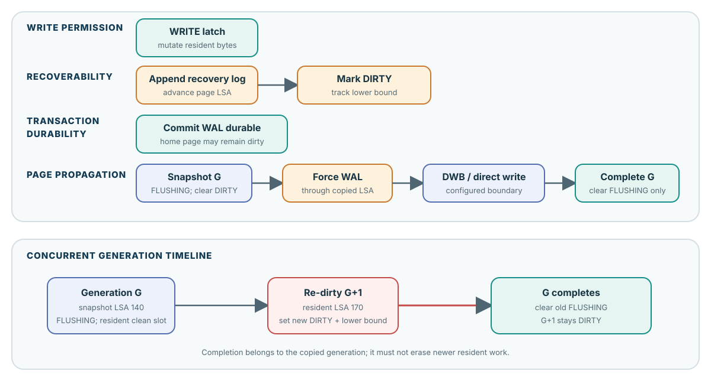
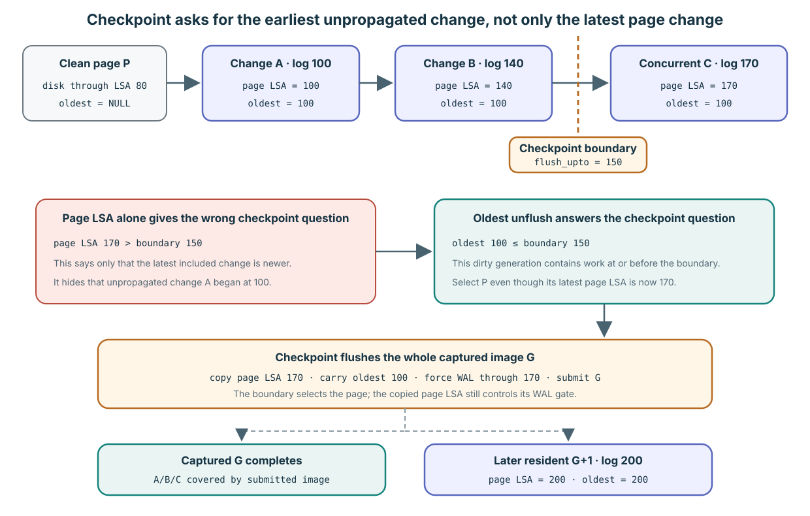
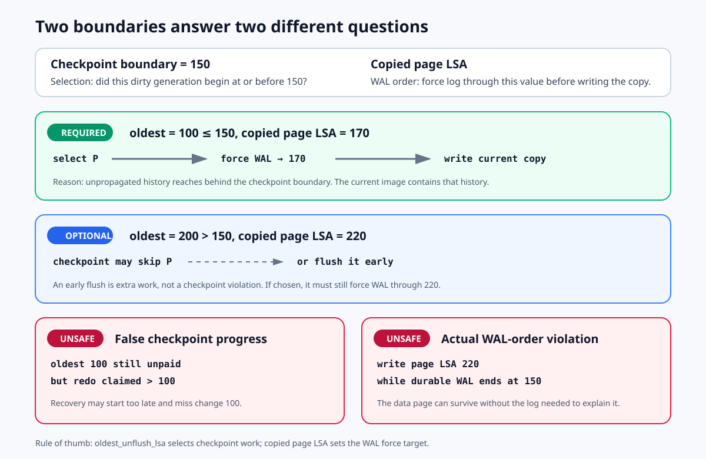
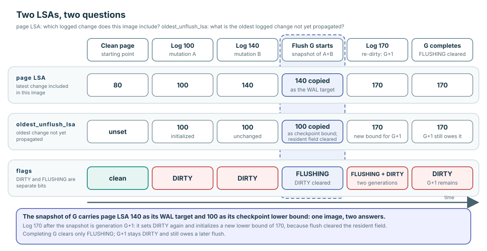

가득 찬 풀에서 변경된 페이지를 안전하게 기록하려면?
시작 상황: 요청 thread에 필요한 페이지 Q는 메모리에 없습니다. 페이지 한 장을 담는 메모리 자리인 frame은 모두 차 있습니다. 페이지 P는 이미 한 frame에 있고 현재 사용하는 thread는 없습니다. 하지만 메모리의 변경 내용은 아직 페이지 저장소로 보내지 않았습니다. 이런 상태를 dirty라고 합니다.
Flusher는 이 변경 내용을 저장소 쪽으로 보내는 thread입니다. Writer는 메모리의 내용을 바꾸는 thread입니다. Flusher가 이전 사본을 보내는 동안 writer가 페이지를 다시 바꿀 수 있다는 점이 문제입니다.
이는 설명을 위해 구성한 시작 상황입니다. 아래 예제는 각각 명시한 값에서 다시 시작하며, 하나의 연속 실행을 나타내지 않습니다.
Flush는 안정된 페이지 사본을 저장 경로에 제출한다
시작 상태: Writer가 메모리의 페이지를 바꿨지만 페이지가 평소 저장되는 홈 저장소의 내용은 아직 이전 상태입니다.
CUBRID의 페이지 버퍼 flush는 변경을 막고 보호한 한 시점의 페이지 바이트를 복사해 안정된 페이지 이미지를 확보하고, 필요한 복구 로그를 먼저 영속화한 뒤 선택한 페이지 저장 경로에 제출하는 일입니다.
DWB(double-write buffer)를 사용하면 메모리의 중간 저장 자리인 slot에 이미지를 접수한 것만으로 flush가 성공할 수 있습니다. DWB를 쓰지 않는 경로에서는 홈 페이지에 직접 쓰기를 요청합니다. 성공 반환만으로 이미지의 영속화를 보장하지 않습니다.
사본 확보 뒤 writer는 메모리에 남아 있는 상주 페이지(resident page)를 계속 사용할 수 있습니다. Flusher는 확보한 이미지의 제출을 마치면서 이를 이후 변경과 혼동하지 않아야 합니다.
Dirty flag는 아직 기록해야 할 변경을 나타낸다
같은 상황을 세 곳에서 보면: 메모리의 바이트가 페이지의 홈 저장소 내용보다 새롭습니다. BCB(buffer control block)는 frame의 관리 정보입니다. DIRTY flag는 상주 페이지의 변경을 아직 페이지 저장소로 보내야 한다는 뜻입니다. 이렇게 변경을 저장소 쪽으로 보내는 일을 전파(propagation)라고 합니다.
| 장소 | 시작 상태 | 중요한 이유 |
|---|---|---|
| 메모리의 buffer frame | 변경된 페이지 바이트 | 빠르게 쓸 수 있지만 휘발성입니다. Process나 machine 장애로 잃을 수 있습니다. |
| 페이지의 홈 저장소 | 이전 페이지 바이트 | 페이지가 평소 저장되는 위치이며, 아직 변경을 따라오지 못했습니다. |
BCB DIRTY | 1로 설정됨 | 상주 페이지의 미완료 기록 의무를 나타냅니다. Flag 값 0은 설정되지 않은 상태입니다. |
페이지 기록과 페이지 사용 해제는 서로 다른 일을 끝낸다
시작 상태: 변경된 상주 페이지는 아직 전파해야 합니다. BCB는 이를 DIRTY로 기록합니다. Flush는 복사된 이미지에 대해 작업하며, FLUSHING은 그 이미지의 페이지 버퍼 flush 작업이 아직 끝나지 않았음을 나타냅니다.
Checkpoint는 복구 경계를 기록하고 관련 dirty 변경을 전파해, 재시작 때 재생할 로그 이력을 줄이려 합니다. Shutdown도 dirty 페이지를 저장소 쪽으로 보냅니다. 교체 압력이 있을 때 flush의 관리 상태 처리가 성공하면 clean이고 사용하지 않는 frame이 이후 재사용 후보가 될 수 있습니다.
Unfix는 호출자에게 허용된 페이지 사용을 해제합니다. Commit은 트랜잭션의 영속성 절차를 마칩니다. Eviction은 frame에서 페이지를 내보냅니다. Flush가 끝내는 일은 이들과 다르므로, flush를 마친 페이지도 메모리에 남을 수 있습니다. Clean 상태만으로 재사용이 허용되지는 않습니다.
고정된 사본이 있으면 이후 writer는 계속 진행할 수 있다
독립 예제: Dirty 페이지가 메모리에 있고 진행 중인 flush는 없습니다. Flusher는 먼저 변경을 잠시 막고 바이트와 그에 맞는 로그 관리 정보를 복사합니다. 이 고정된 이미지를 G라고 부릅니다. 사본 확보 뒤 writer가 상주 바이트를 다시 바꿀 수 있으며, 이 이후 변경 작업을 G+1이라고 부릅니다.
G와 G+1은 동작을 설명하는 이름이며 BCB에 저장된 세대 counter가 아닙니다. 사본은 상주 frame과 별도로 존재하므로 이후 쓰기는 flusher가 보내는 바이트를 바꾸지 않습니다.
두 flag가 이전 작업과 새 작업을 구별한다
상태 기호: G는 진행 중인 flusher가 확보한 안정된 이미지입니다. G+1은 사본 확보 이후 상주 페이지에 생긴 변경입니다. BCB에서 DIRTY는 flush가 필요한 상주 변경을, FLUSHING은 아직 끝나지 않은 사본 작업을 나타냅니다. 여기서 1은 설정, 0은 해제입니다.
아래 행은 서로 다른 시점에 가능한 상태를 비교합니다. 표 순서대로 일어나는 네 사건이 아닙니다.
| 상태 | 남아 있는 일 |
|---|---|
DIRTY=1, FLUSHING=0 | 상주 변경을 flush해야 합니다. 이전 사본의 진행 중 작업은 없습니다. |
DIRTY=0, FLUSHING=1 | G의 작업을 마쳐야 합니다. 이후 상주 변경은 아직 기록되지 않았습니다. |
DIRTY=1, FLUSHING=1 | G를 마친 뒤 더 새로운 상주 변경 G+1을 별도로 flush해야 합니다. |
DIRTY=0, FLUSHING=0 | 상주 변경의 flush 의무도 사본의 진행 중 작업도 기록되어 있지 않습니다. 이것만으로 홈 저장소 영속성이나 재사용 허가를 증명하지는 않습니다. |
이전 dirty 신호를 비워 새 변경을 기록할 자리를 만든다
독립 실행 순서: 상주 페이지는 dirty이고 진행 중인 flush는 없습니다. G는 보호 아래 확보할 사본, G+1은 writer가 이후 만들 상주 변경을 뜻합니다. DIRTY는 상주 변경을, FLUSHING은 사본의 작업을 추적합니다.
- Flusher가 G를 맡습니다.
FLUSHING=1로 설정하고 이전DIRTY를 지웁니다. 이제 이전 작업은 안정된 사본이 맡습니다. - 사본을 확보하는 보호 구간이 끝나면 writer가 상주 페이지를 변경하고
DIRTY=1을 다시 설정합니다. 이제 두 flag가 모두 설정되어 있습니다. - G 제출이 성공합니다. BCB 보호 아래 완료 처리는
FLUSHING만 지웁니다. - 남은
DIRTY=1이 G+1을 이후 flush 대상으로 계속 드러냅니다.
Flusher는 두 번째 flush가 동시에 경쟁하는 것도 막습니다. 순서를 보장하지 않으면 이전 이미지가 새 이미지보다 늦게 기록을 마쳐 덮어쓸 수 있습니다. 완료를 기다려야 하는 동기식 호출자는 새 flush를 시작하는 대신 진행 중인 flush를 기다릴 수 있습니다.
확인된 동작: 동시에 경쟁하는 flush의 배제와 대기는 고정 리비전 page_buffer.c:8809–8901, flag helper는 16077–16126에서 확인합니다.
복구 로그가 페이지 이미지보다 먼저 살아남아야 한다
시작 상황: 트랜잭션이 영구 페이지를 변경하고, 그 변경의 복구에 필요한 정보를 로그에 기록합니다. Crash로 메모리가 사라질 수 있으므로, 로그에 기록된 페이지 이미지가 페이지 저장소에 도달하도록 허용하기 전에 로그가 먼저 살아남아야 합니다.
WAL은 write-ahead logging입니다. 로그에 기록된 페이지 이미지를 제출하기 전에 그 변경을 설명하는 복구 로그를 영속화합니다. 영속적(durable)이라는 말은 명시한 crash·저장소 가정 아래 데이터가 유지된다는 뜻입니다. 운영체제의 쓰기 호출 반환만으로 이를 입증할 수는 없습니다.
Commit은 필요한 로그를 포함해 트랜잭션의 영속성 절차를 마칩니다. 홈 페이지는 여전히 이전 상태일 수 있습니다. Crash 뒤 복구가 로그에 기록된 변경을 재생할 수 있기 때문입니다. 페이지 전파는 그 뒤 별도로 수행할 일입니다.
Commit과 페이지 전파가 넘는 경계는 다르다
독립 그림: G는 로그가 기록된 영구 페이지에서 확보한 이미지입니다. G+1은 이후 상주 변경입니다. WRITE latch는 변경을 보호합니다. 사본을 확보하면 이전 이미지는 고정되고 이후 writer는 계속 진행할 수 있습니다. Commit은 트랜잭션의 영속성 절차를 마치지만, 홈 페이지는 여전히 이전 상태일 수 있습니다.
페이지 LSA는 이미지에 포함된 가장 최신 로그 위치입니다. Oldest-unflush는 미완료 작업이 시작된 위치를 기록합니다. DIRTY는 상주 변경을, FLUSHING은 이전 사본의 작업을 추적합니다. WAL은 페이지 이미지보다 먼저 영속화해야 하는 복구 로그이며, DWB는 이미지를 먼저 맡아 두는 선택적 double-write staging 경로입니다.

Commit은 필요한 로그를 영속화하며, 모든 홈 페이지를 보낼 필요는 없습니다. 이전 사본의 완료 처리는 이후 상주 변경을 보존해야 합니다.
최신 로그 위치와 가장 오래된 미완료 변경은 다른 질문에 답한다
시작 상태: 상주 페이지에 로그로 기록된 여러 변경이 있고 아직 전파되지 않았습니다. LSA(log sequence address)는 복구 로그의 위치입니다. 예제의 숫자는 순서가 있는 위치를 나타내며 실제 CUBRID LSA 구조체 값은 아닙니다.
Flusher는 사본에 어느 위치까지의 로그 변경이 들어 있는지 알아야 합니다. Checkpoint는 미완료 작업이 얼마나 이전부터 남아 있는지 알아야 합니다. 하나의 값으로 두 질문에 모두 답할 수는 없습니다.
| 값 | 답하는 질문 | 이 값이 결정하는 동작 |
|---|---|---|
| 사본의 페이지 LSA | 복사한 바이트에 포함된 가장 최신 로그 변경은 무엇인가? | 사본 제출 전에 이 위치까지 WAL을 영속화합니다. |
oldest_unflush_lsa | 아직 전파하지 않은 dirty 변경 구간은 어디서 시작했는가? | Checkpoint 대상을 고르고 복구의 redo 시작점이 미완료 이력을 지나가지 않게 합니다. |
새 변경이 생기면 한 로그 경계만 앞으로 움직인다
독립 수치 예제: P는 메모리에 상주하는 영구 페이지입니다. 홈 이미지에는 로그 위치 80까지의 변경이 들어 있습니다. Writer가 로그 위치 100, 140, 170에서 페이지를 변경합니다. 이 변경 중에 flush가 시작되거나 완료되지는 않습니다.
페이지 LSA는 포함된 가장 최신 로그 변경을 가리키므로 100 → 140 → 170으로 움직입니다. Oldest-unflush LSA는 아직 전파하지 않은 변경의 시작점이므로 100에 머뭅니다.
뒤의 사본 확보 예제는 각자의 시작 상태를 갖습니다. Flush가 없는 이 실행 순서를 이어 가지 않습니다.
Checkpoint는 오래된 의무를 고르지만 현재 이미지를 기록한다
독립 그림: P는 홈 이미지가 로그 위치 80까지 반영된 상주 영구 페이지입니다. A, B, C는 각각 위치 100, 140, 170에서 로그로 기록한 변경입니다. 아직 완료된 사본은 없습니다. G는 확보할 현재 이미지, G+1은 이후 상주 변경을 뜻합니다.
Checkpoint는 정한 로그 경계까지의 작업을 전파하려 합니다. 여기서는 flush_upto_lsa=150입니다. oldest_unflush_lsa=100이므로 이 페이지에는 경계에 해당하는 미완료 작업이 남아 있습니다. 현재 페이지 LSA 170은 현재 이미지를 보내기 전에 어느 로그까지 영속화해야 하는지 알려 줍니다.

100 ≤ 150이므로 이 페이지를 고릅니다. 위치 100의 과거 이미지를 재구성하는 대신 현재 이미지를 확보하고 170까지 WAL을 영속화합니다. 이후 위치 200의 상주 변경은 별도의 의무를 시작합니다.
복구 진도를 잘못 기록한 경우와 WAL이 부족한 경우는 원인이 다르다
독립 사례: P는 로그로 기록한 변경이 있는 영구 페이지입니다. Checkpoint 경계는 150입니다. Oldest-unflush는 미완료 작업의 시작점, 사본의 페이지 LSA는 포함된 최신 로그 위치입니다. Redo 시작점은 복구가 로그 재생을 시작할 위치입니다. 복구 로그인 WAL은 제출 전에 사본의 LSA까지 영속화되어야 합니다. 그림의 각 사례는 별도로 시작합니다.

각각 독립된 사례입니다. 대상 선택은 미완료 작업이 언제 시작했는지 묻고, WAL 순서는 선택한 이미지가 어디까지의 로그를 포함하는지 묻습니다.
위치 100에서 시작한 작업을 아직 전파하지 않았다면 redo 시작점을 100보다 뒤로 기록할 때 빠진 변경을 건너뛸 수 있습니다. 페이지를 dirty로 남겨 두더라도 반환하는 최솟값이 redo 시작점을 100 이하로 유지한다면 안전할 수 있습니다.
다른 위험 사례에서는 WAL은 150까지만 영속화되었는데 220까지 반영한 이미지를 기록합니다. 페이지가 살아남아도 그 변경을 설명할 로그가 없을 수 있습니다. 위치 200에서 시작한 새 작업은 checkpoint 150에서 건너뛰거나, 그 사본의 LSA까지 WAL을 영속화하고 미리 flush해도 안전할 수 있습니다.
Checkpoint의 재확인이 미완료 작업을 복구 범위에 남긴다
시작 상황: Checkpoint가 dirty 페이지를 수집했지만 다시 살펴보기 전에 페이지가 바뀔 수 있습니다. 수집 결과는 관찰한 상태이며, 오래된 상태를 그대로 사용할 권한은 아닙니다.
Checkpoint는 BCB 관리 정보의 mutex 아래에서 페이지 identity, 현재 DIRTY flag, oldest_unflush_lsa를 다시 확인합니다. Flush를 기다린 뒤에는 새 작업도 경계에 해당하는지 확인하고 다시 flush할 수 있습니다. 미완료 작업이 남으면 가장 이른 로그 위치를 로그 관리자에게 반환하는 최솟값에 포함해야 합니다.
이 최솟값은 복구가 재생을 시작하는 redo 위치를 제한해, 실제 페이지 전파보다 더 많이 진행했다고 기록하지 않게 합니다.
확인된 동작: 필드의 의미와 초기화는 고정 리비전 page_buffer.c:541, 5041–5071에 있습니다. Checkpoint의 대상 선택은 4172–4186, 4247–4257, 재확인과 남은 최솟값은 4533–4600에 있습니다. 로그 관리자는 log_page_buffer.c:6974–7030, 7217–7225에서 이 결과를 사용합니다.
보호를 풀기 전에 바이트와 로그 관리 정보를 함께 확보한다
독립 시작 상태: 로그가 기록된 영구 페이지가 dirty이며 경쟁하는 flush는 없습니다. G는 확보할 안정된 이미지, G+1은 이후 상주 변경입니다. DIRTY는 상주 변경, FLUSHING은 진행 중인 사본을 추적합니다. 호출자는 BCB 관리 정보의 mutex를 갖고 안전한 내용 접근 조건도 확보했습니다.
- 작업 확보와 복사: 페이지 identity를 확인하고 FLUSHING을 설정한 뒤 이전 DIRTY를 지웁니다. 보호된 바이트와 페이지 LSA를 함께 복사합니다. Oldest-unflush 경계를 저장하고 상주 페이지의 해당 필드를 비워, 이후 작업이 자체 시작점을 기록할 수 있게 합니다.
- 보호 해제와 순서 보장: BCB 잠금을 풉니다. 사본을 제출하기 전에 그 사본의 페이지 LSA까지 WAL을 영속화합니다.
- 제출: DWB staging 경로나 홈 저장소에 직접 쓰는 경로를 사용합니다.
- 완료: BCB 보호 아래 FLUSHING을 지우고 flush 대기자를 깨웁니다. 더 새로운 DIRTY는 남겨 둡니다. 완료 처리는 이 호출 경로에서 하거나 post-flush에서 할 수 있습니다.
Q02 · 제출할 사본에는 어느 로그 위치가 해당하는가?
Q02 · 사본에 맞는 WAL 경계
독립 시작 상태: G는 로그가 기록된 영구 페이지의 안정된 사본입니다. 페이지 LSA 120까지의 변경을 포함합니다. 이후 writer가 상주 페이지 LSA를 180으로 높였습니다. 복구 로그인 WAL은 이미 140까지 영속화되어 있습니다. 아직 G를 제출하지 않았습니다.
선행 기록 규칙은 제출할 이미지에 포함된 가장 최신 변경까지 로그가 영속화되도록 요구합니다. 이 숫자는 순서가 있는 로그 위치를 단순화한 값입니다.
예측: 이 사본의 WAL 순서를 결정하는 LSA는 무엇인가요?
토론한 뒤 설명 펼치기
G가 담은 LSA는 120입니다. 140까지 영속화된 WAL이 이미 이를 포함합니다. 상주 LSA 180은 이후 작업에 해당합니다. 180까지 영속화하려고 기다려도 이 사본은 바뀌지 않고 추가 로그만 기다립니다. 후보 선택의 사전 확인은 현재 상주 LSA를 살펴볼 수 있지만, 이후 공통 helper는 자신이 확보한 이미지에 맞춰 복사한 LSA를 사용합니다.
추가 질문: 상주 LSA를 사용하면 이미지와 영속화하는 로그 작업의 관계가 어떻게 달라지나요?
이전 사본을 완료해도 이후 dirty 신호는 남긴다
한 frame, 안정된 사본, 두 미완료 의무
Trace 기호: P는 상주 영구 페이지, G는 그 안정된 사본, G+1은 이후 상주 변경입니다. BCB 관리 정보는 DIRTY(상주 변경), FLUSHING(진행 중인 사본), oldest-unflush(미완료 작업의 가장 이른 로그 위치)를 추적합니다. LSA 숫자는 순서가 있는 로그 위치입니다. Unfix는 허용된 사용을 해제합니다.
독립 초기화: 아래 첫 상태가 시작점이며 현재 fix(허용된 페이지 사용)나 제출된 사본은 없습니다. 단계는 순서대로 이어집니다. WAL은 복구 로그입니다. 활성화된 DWB는 이미지를 먼저 맡는 double-write staging이며, 접수만으로 홈 저장소 영속성을 입증하지는 않습니다. 초기화 버튼은 이 trace만 다시 시작합니다.
1. 시작: 아직 전파하지 않은 변경
수행자 / 사건: Writer가 변경을 마치고 unfix함
- 상주 P · 바이트 / LSA
- 40 / 120
- 안정된 사본 G · 바이트 / LSA
- none
- BCB · DIRTY / FLUSHING / oldest-unflush
- 1 / 0 / 120
- WAL / DWB / 홈 volume
- durable WAL=140; DWB=none; home=older
진행 조건: 현재 fix는 없지만 변경을 보존할 의무는 남아 있음
변경 / 결과: 시작 상태이며 제출한 이미지는 없음
2. G 작업을 맡고 사본 확보
수행자 / 사건: Flush 호출자가 보호 아래 작업함
- 상주 P · 바이트 / LSA
- 40 / 120
- 안정된 사본 G · 바이트 / LSA
- 40 / 120
- BCB · DIRTY / FLUSHING / oldest-unflush
- 0 / 1 / NULL
- WAL / DWB / 홈 volume
- durable WAL=140; DWB=none; home=older
진행 조건: Flush 담당자는 하나이며 안정된 바이트와 그 LSA를 함께 확보함
변경 / 결과: DIRTY 1→0; FLUSHING 0→1; 사본=40/120; 상주 페이지의 미완료 로그 하한을 비움
3. 이후 writer가 G+1을 만듦
수행자 / 사건: 사본 확보의 보호가 풀린 뒤 writer가 변경함
- 상주 P · 바이트 / LSA
- 40 / 180
- 안정된 사본 G · 바이트 / LSA
- 40 / 120
- BCB · DIRTY / FLUSHING / oldest-unflush
- 1 / 1 / 160
- WAL / DWB / 홈 volume
- durable WAL=140; DWB=none; home=older
진행 조건: Writer가 필요한 fix와 내용 보호를 확보하고 로그를 기록한 뒤 dirty로 표시함
변경 / 결과: 데이터 값 40→41→40; 현재 LSA 120→180; 새 DIRTY 0→1. G는 40/120 그대로임
4. 확보한 이미지만 제출
수행자 / 사건: Flush 호출자 → DWB(제출)
- 상주 P · 바이트 / LSA
- 40 / 180
- 안정된 사본 G · 바이트 / LSA
- 40 / 120
- BCB · DIRTY / FLUSHING / oldest-unflush
- 1 / 1 / 160
- WAL / DWB / 홈 volume
- durable WAL=140; DWB=G accepted; home=unobserved
진행 조건: WAL 140이 사본 LSA 120을 포함함; 이후 상주 LSA 180은 별도 작업임
변경 / 결과: DWB가 G=40/120을 접수함; 홈 쓰기와 저장소 동기화 요청인 fsync는 관찰하지 않음
5. G를 완료하고 더 새로운 DIRTY는 남김
수행자 / 사건: 완료 담당자가 BCB mutex를 보유함
- 상주 P · 바이트 / LSA
- 40 / 180
- 안정된 사본 G · 바이트 / LSA
- 40 / 120
- BCB · DIRTY / FLUSHING / oldest-unflush
- 1 / 0 / 160
- WAL / DWB / 홈 volume
- durable WAL=140; DWB=G accepted; home=unobserved
진행 조건: 제출 성공; 이전 FLUSHING만 지우고 flush 대기자를 깨움
변경 / 결과: FLUSHING 1→0. DIRTY=1과 미완료 로그 하한 160은 남음; 같은 데이터 값이라고 G+1이 사라지지는 않음
소스에 근거해 구성한 실행 순서이며 runtime 증거는 아닙니다. page_buffer.c:10723–10962
사본 확보 뒤 새 oldest-unflush 경계가 시작된다
독립 그림: 로그 위치 80의 clean 영구 페이지에서 다시 시작합니다. A와 B는 위치 100과 140에서 로그로 기록한 변경입니다. Flusher가 이 변경을 이미지 G로 확보합니다. 이후 위치 170의 로그 변경은 상주 작업 G+1이 됩니다. 이 값은 앞 trace의 값과 다릅니다.
페이지 LSA는 포함된 최신 로그 위치, oldest-unflush는 미완료 작업의 시작점입니다. 사본을 확보할 때 상주 페이지의 미완료 로그 하한을 비우므로 이후 writer가 새 시작점을 기록합니다. WAL은 사본의 LSA까지 영속화되어야 합니다. DIRTY는 상주 변경을, FLUSHING은 진행 중인 사본을 추적합니다.

G에는 페이지 LSA 140과 oldest-unflush 100이 있습니다. G+1은 위치 170에서 새 oldest-unflush 경계를 시작합니다. G를 완료해도 이 새 경계와 DIRTY는 그대로 남습니다.
확인된 동작: 일반 경로는 고정 리비전 page_buffer.c:10723–10962에 있습니다.
안정된 사본과 DWB가 해결하는 문제는 다르다
시작 상태: G는 변경된 페이지에서 확보한 안정된 이미지입니다. 별도 사본이므로 이후 상주 변경은 그 바이트를 바꾸지 못합니다. 이제 flusher는 어디로 보낼지 선택해야 합니다.
DWB(double-write buffer)는 선택적으로 사용하는 중간 저장(staging) subsystem입니다. 페이지의 홈 저장소에 쓰기 전에 복구용 이미지를 먼저 보존합니다. Crash로 페이지 일부만 갱신되는 torn write에 대비하는 절차입니다.
DWB를 사용할 수 없거나 페이지가 임시 volume에 속하면 페이지 버퍼 경로는 대신 직접 fileio_write()를 호출합니다. 안정된 사본은 여전히 존재합니다. 로그가 기록된 비임시 페이지는 여전히 WAL을 따릅니다. 이미지 제출 전에 그 변경을 설명하는 로그를 영속화해야 합니다.
선택한 경로에 따라 성공 반환의 의미가 달라진다
독립된 두 경로의 비교: G는 제출할 준비가 된 안정된 페이지 이미지입니다. 로그가 기록된 비임시 페이지라면 WAL은 이미지에 필요한 로그 조건을 충족했습니다. DWB는 double-write buffer이며, 홈 저장소는 페이지의 평소 데이터 volume 주소입니다.
| DWB 경로 | 직접 쓰기 경로 |
|---|---|
| DWB가 중간 저장 자리인 slot에 G를 접수합니다. 이후 묶음 쓰기를 담당하는 block 처리 절차는 홈 쓰기 전에 중간 저장 이미지를 쓰고 동기화합니다. | fileio_write()가 G를 홈 저장소 쪽으로 씁니다. |
| 보존된 중간 저장 이미지가 유효하면 DWB 복구 절차로 불완전한 홈 페이지를 복구할 수 있습니다. | 이 경로는 DWB 복구 이미지를 제공하지 않습니다. 원자적 저장이나 다른 복구 기법이 그 역할을 맡아야 합니다. |
| 일부만 찬 block을 flush하기 전에 접수 호출이 반환할 수 있습니다. | 운영체제 쓰기 호출의 반환만으로 저장소 영속성이 증명되지는 않습니다. |
FLUSHING은 fsync의 진행 상태가 아니다
독립 시작 상태: G는 dirty 영구 페이지에서 확보한 안정된 이미지입니다. DWB(double-write buffer)가 메모리 slot으로 접수할 예정이며, 홈 volume은 평소 데이터를 저장하는 파일입니다. WAL은 복구 로그입니다. 제출 전에 G에 필요한 로그 위치까지 영속화돼 있어야 합니다. 이 WAL 조건을 충족한 뒤 dwb_add_page()가 성공해야 접수가 완료됩니다. 예약한 slot에 복사한 것만으로는 부족합니다.
FLUSHING은 페이지 버퍼 작업을 추적합니다. 프레임 관리 레코드인 buffer control block(BCB)의 플래그입니다. 이미지 확보와 WAL 강제 기록 전에 설정하고, 선택한 경로로 제출이 성공한 뒤 BCB 완료 처리를 수행할 때 지웁니다. 호출자가 직접 처리하거나 post-flush에 맡길 수 있습니다. 파일 동기화를 요청하는 운영체제 호출인 fsync()나 fdatasync()의 진입·반환 상태를 추적하지는 않습니다.
fsync(), 그렇지 않으면 fdatasync()를 선택합니다.확인된 동작: 사본 확보·WAL·제출·BCB 완료 처리 · DWB 접수와 꽉 찬 block의 동기 처리 분기 · WAL 동기화 · 동기화 wrapper.
Q04 · 완료 기록이 입증하는 사건은 무엇인가?
Q04 · 완료가 어디까지 확인했는가?
독립 시작 상태: G는 안정된 페이지 사본 하나입니다. 관찰한 사건을 명시하는 구성 기록(receipt)에 따르면 DWB(double-write buffer)가 G를 접수했고, BCB 완료 처리가 진행 중인 사본을 나타내는 FLUSHING을 지웠습니다. 이후 변경은 없습니다.
DWB 접수는 중간 저장 subsystem이 이미지를 맡았다는 뜻입니다. 이 기록에는 홈 volume 쓰기, 저장소 동기화 요청인 fsync, 재시작 결과가 없습니다. 이런 이후 사건이 일어났다고 가정하지 않습니다.
예측: 이 기록으로 뒷받침할 수 있는 가장 강한 완료 주장은 무엇인가요?
토론한 뒤 설명 펼치기
확보한 이미지가 DWB 제출 경계를 넘었고, 페이지 버퍼의 완료 관리 처리가 끝났습니다. 홈 volume 전파나 crash 영속성을 주장하려면 이후 쓰기, 실제로 효과가 있었던 동기화, 해당 복구 결과의 증거가 필요합니다.
추가 질문: 홈 volume의 영속성을 뒷받침하려면 어떤 증거가 더 필요한가요?
확인된 동작: 안정된 사본과 경로 선택은 고정 리비전 page_buffer.c:10735–10834, WAL 조건과 DWB·직접 제출은 10836–10899에서 확인합니다.
이전 완료 처리는 새 작업을 계속 드러내야 한다
독립 완료 사례: G는 제출한 안정된 사본입니다. 이후 writer가 상주 변경 G+1을 만들고 DIRTY를 다시 설정했습니다. FLUSHING은 아직 진행 중인 G의 작업을, 상주 oldest-unflush 값은 G+1의 시작점을 나타냅니다. Re-dirty는 이전 사본을 확보한 뒤 상주 dirty 신호를 다시 설정하는 일입니다.
성공: BCB 보호 아래 완료 처리는 FLUSHING만 지웁니다. G+1의 DIRTY와 새 oldest-unflush 값은 다음 flush를 위해 남습니다.
일반적인 제출 실패: DWB·직접 I/O 오류 경로는 FLUSHING을 지우고, 사본에 저장했던 DIRTY 의무와 oldest-unflush 하한을 복원합니다. Flush 대기자를 깨우고 실패를 반환합니다. 이전 하한을 되살려 오래된 미완료 작업도 놓치지 않도록 보수적으로 처리합니다.
Q03 · 값이 같아져도 로그 이력은 사라지지 않는다
Q03 · 같은 값, 다른 로그 작업
독립 시작 상태: G는 페이지 LSA 120에 값 40을 담은 안정된 사본입니다. 페이지 LSA는 포함된 최신 로그 변경을 가리킵니다. 사본 확보 뒤 writer가 상주 필드를 41로 바꿨다가 40으로 되돌리고 두 변경을 모두 로그에 기록합니다. 현재 페이지 LSA는 180이며, 상주 기록 의무를 나타내는 DIRTY가 설정되어 있습니다.
이제 G 제출이 성공합니다. 성공 완료 처리는 진행 중인 사본의 FLUSHING을 지우며, 이후 DIRTY 신호는 지우지 않습니다.
예측: 데이터 값이 같다는 사실만으로 현재 DIRTY를 지울 수 있나요?
토론한 뒤 설명 펼치기
DIRTY를 지울 근거가 되지 않습니다. G는 120까지의 이력을 담지만 현재 로그 작업은 180까지 진행됐습니다. 완료 처리는 이전 FLUSHING을 지우고 더 새로운 DIRTY와 oldest-unflush 하한은 남깁니다. 데이터 필드 하나의 비교로 해당 변경 작업의 완료를 입증할 수는 없습니다.
추가 질문: 필드 값과 함께 어떤 이력을 기록해야 하나요?
확인된 동작: 일반 실패의 상태 복원은 고정 리비전 page_buffer.c:10908–10923에 있습니다. 그보다 앞선 TDE(transparent data encryption, 투명한 데이터 암호화)와 DWB(double-write buffer) slot 준비의 반환 경로는 VS-12로 추적합니다. 이는 불확실성 목록의 참조 이름이며, 소스에서 보이는 후보를 입증하려면 장애 주입 증거가 필요합니다. 이 페이지는 운영 환경의 결함이 입증됐다고 선언하지 않습니다.
호출자의 보호 조건이 사본을 신뢰할 수 있게 한다
독립 소스 따라가기: 로그가 기록된 영구 페이지가 dirty입니다. 호출자는 BCB 관리 정보의 mutex를 갖고 사본 확보가 안전한지도 확인했습니다. G는 확보할 안정된 사본, G+1은 이후 상주 변경입니다. 여기서 사본의 페이지 LSA는 120이고 WAL은 140까지 영속화되어 있습니다.
pgbuf_bcb_flush_with_wal()은 FLUSHING을 설정하고 이전 DIRTY를 지운 뒤, 서로 맞는 바이트와 페이지 LSA를 확보합니다. 이어 oldest-unflush를 저장하고 비웁니다. WAL 영속화와 이미지 제출 전에 잠금을 풉니다. 나중에 flag helper가 FLUSHING을 지우면서 새로 설정된 DIRTY는 보존합니다.
BCB mutex만으로는 다른 WRITE-latch 소유자가 바이트를 바꾸는 것을 막을 수 없습니다. 호출자의 적합성 확인과 내용 latch 절차가 사본 확보 중 해당 writer를 배제해야 합니다. Safe-flush 경로는 다른 WRITE 소유자에게 작업을 미루거나 경쟁하는 flush를 기다릴 수 있습니다. 조건을 충족한 호출자는 직접 사본을 확보할 수 있습니다.
이후 writer가 180까지 진행해도 140까지의 WAL은 G의 120을 포함합니다. Oldest-unflush는 별도의 checkpoint 질문에 답합니다. Flag helper의 주석은 이후 변경도 추적해야 한다고 명시합니다. 더 넓은 성능상 이점은 Inference(추론)로 남습니다.
확인된 동작: page_buffer.c:10727–10966 · flag helper · 변경 세대의 표준 설명.
Dirty bit 하나로 처리하면 이후 writer의 작업을 지울 수 있다
같은 시작 상태, 세 가지 완료 규칙
Trace 기호: P는 상주 페이지, G는 확보한 안정된 사본입니다. D는 상주 기록 의무를 추적하는 DIRTY flag의 약자입니다. F는 이전 사본의 진행 중 작업을 추적하는 FLUSHING flag의 약자입니다. 1은 설정, 0은 해제입니다. WAL은 페이지보다 로그를 먼저 영속화하는 조건입니다.
독립된 세 설계가 값 11, 페이지 LSA 120, DIRTY=1에서 시작합니다. 복사와 WAL은 유지합니다. 가운데 열만 새 dirty 작업의 별도 추적을 없앱니다. 오른쪽 열은 I/O가 끝날 때까지 writer를 배제합니다. 단계는 각 열 안에서 이어지며 초기화 버튼은 이 비교를 다시 시작합니다. “11 @120”은 로그 위치 120에 값 11이라는 뜻입니다.
1. G 사본 확보
- 구현된 두 flag
- D=0; F=1
- 구분 제거
- D=1; one debt bit
- 직렬화 대안
- D=1; writers excluded
- Writer / 이미지
- G=11 @120; resident=11
조건 / 가정: 모든 경로가 보호 아래 같은 이미지를 확보합니다.
변경 / 결과: 직렬화 대안만 I/O가 끝날 때까지 writer 배제를 유지합니다.
2. Writer가 이후 변경을 로그에 기록
- 구현된 두 flag
- D=1; F=1
- 구분 제거
- D=1; same debt bit
- 직렬화 대안
- writer waits; resident=11
- Writer / 이미지
- G=11 @120; resident=12 @180
조건 / 가정: 처음 두 경로는 복사 뒤 바이트 보호를 풉니다.
변경 / 결과: 두 flag를 쓰는 열만 이후 dirty 작업을 구별합니다. 직렬화는 그 변경을 미룹니다.
3. G 제출 성공
- 구현된 두 flag
- D=1; F=0
- 구분 제거
- D=0; newer debt lost
- 직렬화 대안
- G done; writer may now run
- Writer / 이미지
- G remains 11 @120
조건 / 가정: 구분을 없앤 설계는 제출이 성공할 때마다 하나뿐인 bit를 지웁니다.
변경 / 결과: 구현 경로는 새 의무를 보존합니다. 구분만 없애면 새 의무를 잃습니다. 직렬화는 writer 배제 가정 아래 안전합니다.
안전한 대안은 바이트를 고정하고 해당 작업만 완료해야 한다
독립 설계 비교: Flusher는 변경된 상주 페이지를 기록하려 하고 다른 thread는 그 페이지를 바꾸려 합니다. 구현된 안정된 사본은 두 작업의 겹침을 허용합니다. 사본을 없애려면 전송 중 내부적으로 일관된 이미지를 유지할 다른 방법이 필요합니다.
Writer 직렬화: WAL 영속화와 페이지 쓰기가 끝날 때까지 바이트의 배타적 접근을 유지합니다. 이미지는 바뀌지 않지만 writer는 로그·저장소 지연 동안 기다립니다. 별도의 중간 저장 이미지를 줄이는 대신 보호 구간이 길어집니다.
버전별 이미지: 변경 불가능한 페이지 버전과 그에 맞는 로그 관리 정보를 함께 공개합니다. 각 버전은 자신의 I/O가 끝날 때까지 유지하고 해당 버전의 작업만 완료로 처리합니다. 작업을 겹쳐 진행할 수 있지만 수명과 폐기를 관리할 상태가 늘어납니다.
복사에는 페이지 바이트 수에 비례하는 작업이 필요합니다. 중간 이미지용 메모리는 페이지 크기와 동시 flush 수에 따라 늘어납니다. 경로에 따라 stack buffer(임시 메모리)나 DWB slot(중간 저장 자리)이 이미지를 맡습니다. 암호화, WAL 대기, slot 용량, I/O에도 비용이 들며, 지연 순위는 측정하지 않았습니다.
대안 없이 제거: 변경 가능한 바이트를 읽는 I/O가 writer의 변경 전 한 필드와 변경 후 다른 필드를 읽으면 섞인 이미지를 만들 수 있습니다. 전송이 끝날 때까지 writer를 배제하면 이를 막을 수 있습니다. WAL 순서를 없애는 경우는 별개의 실패입니다. Crash 뒤 데이터만 살아남고 그 변경을 설명할 로그는 없을 수 있습니다.
Flush가 경쟁하면 이전 바이트가 마지막에 기록될 수 있다
독립 제거 예제: G는 이전의 안정된 페이지 이미지이고, G+1은 같은 페이지의 더 새로운 안정된 이미지입니다. 복사와 WAL 순서는 유지하지만 두 flush의 경쟁을 막는 조건을 제거합니다. 홈 쓰기 경로에 이를 대신할 순서 보장 절차가 없다고 가정합니다.
- 이전 이미지를 제출합니다.
- 같은 홈 저장소에 새 이미지를 제출합니다.
- 새 쓰기가 먼저 끝나고 이전 쓰기가 마지막에 끝납니다.
홈 페이지에 이전 바이트가 남을 수 있습니다. 구현의 FLUSHING 조건은 이런 경쟁을 막습니다. Flush를 직렬화해도 막을 수 있습니다. 버전을 구별하는 절차라면 어느 홈 쓰기가 최종 상태가 될 수 있는지 강제해야 합니다.
로그 순서를 지켜도 페이지 쓰기가 원자적이 되는 것은 아니다
독립 crash 사례: 로그가 기록된 영구 이미지가 쓰기 준비를 마쳤고 WAL도 영속화되어 있습니다. 페이지는 여러 저장소 sector에 걸칩니다. 홈 쓰기 도중 일부 sector만 바뀐 채 crash로 중단될 수 있다고 가정합니다. 이것이 torn write입니다.
WAL은 데이터 이미지보다 먼저 복구 정보를 보존합니다. 그것만으로 페이지 전체 쓰기가 원자적이 되지는 않습니다. DWB(double-write buffer)는 별도의 쓰기·복구 절차로 중간 저장된 복구 이미지를 제공합니다. 원자적 페이지 교체나 다른 완전한 이미지 복구 기법이 이 역할을 대신할 수도 있습니다. 그런 가정 아래에서는 DWB를 끄는 것만으로 잘못된 설계가 되지는 않습니다.
저장소 관찰 기록은 해당 사건을 명시해야 합니다. DWB 접수, 운영체제 쓰기 호출 반환, 중간 저장소 동기화, 홈 저장소 동기화, 재시작 후 검증된 복구는 각각 다른 사건입니다. 사본이나 FLUSHING flag로 장치 영속성을 증명할 수는 없습니다. Flush가 페이지 identity를 맡고 있는 동안에는 동시에 frame을 재사용하지 못하게 해야 합니다.
일반 I/O 실패는 dirty·oldest-LSA 관리 상태를 복원합니다. 그보다 앞선 TDE(transparent data encryption, 투명한 데이터 암호화)와 DWB-slot 반환은 별도의 후보 VS-12로 추적합니다. 이 이름은 불확실성 목록의 참조이며 모든 실패의 rollback을 입증하지 않습니다. DWB 담당 범위와 고정 리비전 증거.
DWB는 중간 이미지를 먼저 보존하고 홈 페이지를 전파한다
독립 후속 경로: DWB(double-write buffer)가 확보한 페이지 이미지를 slot에 접수했습니다. Slot은 중간 저장 자리이며, block은 쓰기를 위해 slot들을 묶은 단위입니다. 일부만 찬 block이 flush를 기다리는 동안에도 접수 호출은 반환할 수 있습니다.
- Block flush가 중간 저장 파일을 쓰고 동기화를 요청합니다.
- 중간 저장소 동기화 뒤 홈 페이지들을 기록하고, flush·helper 절차로 해당 volume들을 동기화합니다.
- 복구 때는 유효한 중간 저장 이미지가 남아 있을 때만 손상된 홈 페이지를 교체합니다.
이 설명은 저장소 동기화가 실제로 효과가 있고 유효한 복구 이미지가 남아 있다고 가정합니다. 두 이미지 모두 잃는 경우는 이 보장 범위 밖입니다. 다른 복구 기법은 페이지 전체 이미지를 WAL에 저장하며 그만큼 로그 양이 늘어납니다.
후속 동작: DWB 중간 이미지 쓰기와 동기화가 홈 쓰기에 선행함; 접수 시 일부만 찬 block을 flush하지 않을 수 있음; 복구에는 유효한 중간 저장 이미지가 필요함. 두 이미지 모두 잃거나 저장소 동기화가 효과를 내지 못하는 경우는 이 설명의 범위 밖입니다. 페이지 전체 WAL 이미지는 공식 자료에 설명된 다른 torn-page 복구 기법이며, 추가 WAL 양이 필요합니다.
D25 · 데이터 값이 같으면 다음 flush를 생략해도 될까?
독립 시작 상태: G는 최신 로그 변경 위치인 페이지 LSA 120에 값 40을 담은 사본입니다. 이후 writer가 41, 40을 차례로 로그에 기록하고 상주 페이지를 LSA 180의 DIRTY 상태로 남깁니다. G 제출이 성공합니다. 정상 완료 처리는 이전 FLUSHING을 지우면서 이후 상주 기록 의무는 보존합니다.
제안된 최적화는 선택한 데이터 필드 값이 같다는 이유로 DIRTY를 지웁니다. WAL이 180까지 영속화되었어도 그것은 해당 로그를 사용할 수 있다는 근거일 뿐입니다.
방어 질문: 이후 flush를 생략하려면 이 최적화는 어떤 불변조건을 증명해야 하나요?
반론한 뒤 한정된 답변 펼치기
데이터 값의 일치만으로는 부족합니다. 페이지 header, 로그 이력, dirty 변경 구간의 경계가 다릅니다. 안전한 최적화라면 같은 보호 구간 안에서 전체 이미지의 동등성과 복구에 대한 논증이 필요합니다. 이후 작업을 지우지 않는 완료 확인 방식도 필요합니다. 이 소스에는 그런 규칙이 없습니다.
반론: “WAL은 이미 180까지 영속화되었습니다.” 이는 로그를 사용할 수 있다는 뜻이며 상주 이미지가 전파됐다는 뜻은 아닙니다. G가 담은 LSA는 여전히 120입니다.
구별할 관찰: 사본 LSA, 현재 LSA, flag 전이, 제출한 이미지 identity에 probe를 추가합니다. 새 변경 뒤 이전 완료 처리에서 DIRTY가 지워지면 두 의무를 구별해 보존한다는 주장이 반증됩니다. Crash와 torn-write 테스트에는 저장소 장애 가정을 명시해야 합니다. 이 구성 예제는 실행 결과를 제공하지 않습니다.
사본 없는 대안은 I/O가 끝날 때까지 writer를 배제한다
독립 설명용 대안: 상주 영구 페이지가 dirty이며 경쟁하는 flush는 없습니다. 다른 writer가 접근하려 합니다. 별도 snapshot을 없애고 WAL 영속화와 페이지 제출 내내 바이트의 배타적 접근을 유지합니다. 이는 설계 제안이며 CUBRID가 쓰는 절차라는 주장은 아닙니다.
- 내용 변경을 배제하고, 바뀌지 않는 상주 바이트와 맞는 페이지 LSA를 기록합니다.
- Writer를 계속 배제한 채 해당 LSA까지 WAL을 영속화하고 바이트를 제출합니다.
- 성공하면 다른 writer를 허용하기 전에 해당 이미지의 의무를 마칩니다.
- 오류가 나면 DIRTY와 가장 이른 미완료 로그 위치를 보존하고 임시 상태를 정리한 뒤 배제를 풉니다.
모든 반환 경로에서 정리와 대기자 해제를 맡을 담당자가 정해져 있어야 합니다. 별도 이미지를 줄이는 대신 writer는 로그·저장소 지연 동안 기다립니다. 변경 불가능한 버전도 대안이지만 버전 폐기 절차를 명시해야 합니다. 두 대안 모두 torn write에 대비한 저장소·복구 절차가 필요합니다.
이전 완료 전후에 이후 dirty 신호가 남는지 관찰한다
독립적이며 아직 수행하지 않은 실험 제안: 로그가 기록된 dirty 영구 페이지 하나에서 시작하고 진행 중인 flush는 없습니다. G는 확보할 사본, G+1은 통제된 writer가 이후 만들 상주 변경입니다. 가설은 이전 완료 처리가 이 새 기록 의무를 보존한다는 것입니다.
CUBRID f799e05d77d5300c6ea5753b4a6cc7caee6d8912를 사용합니다. 관찰을 해석하기 전에 build, pool 크기, logging, DWB(double-write buffer), I/O 설정을 기록합니다. LSA는 로그 위치이며, DIRTY는 상주 변경을, FLUSHING은 진행 중인 사본을 추적합니다.
- 통제된 실행 순서
- 사본 확보·잠금 해제 뒤 멈춰 G 완료를 지연합니다. 통제된 writer가 G+1을 로그에 기록하고 dirty로 표시한 뒤 완료 처리를 다시 진행합니다. 이 단계는 이 실험 안에서만 이어집니다.
- 제안한 관찰
- 사본 확보 전, writer 변경 후, 완료 후에 사본·현재 LSA와 DIRTY/FLUSHING을 기록합니다. DWB 접수, 중간 저장소 동기화, 홈 저장소 동기화의 시각은 별도로 기록합니다. 이는 제안한 probe이며 기존 runtime 관찰 기록이 아닙니다.
- 반증 조건과 한계
- 이전 완료 처리가 이후 DIRTY 의무를 지우면 이 조건에서 관리 상태 보존이 실패한 것입니다. Probe의 일시 정지는 timing을 바꿉니다. Flag만으로 crash 영속성을 입증할 수는 없습니다. Crash 테스트에는 장애 지점과 저장소 가정을 명시해야 합니다.